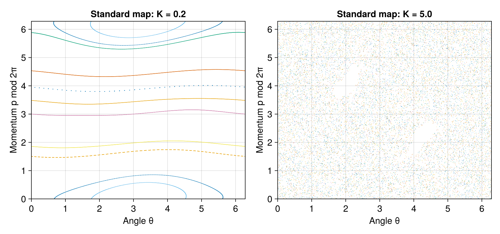

2 Classical mechanics: regular motion, ergodicity, and chaos
Classical chaos provides an instructive route from microscopic trajectories to equilibrium averages. It also provides warnings: instability of trajectories, exploration of an energy surface, and relaxation of an observable are different mathematical properties. We separate them before asking what survives quantization.
2.1 Hamiltonian flow preserves volume
For \(f\) canonical coordinate-momentum pairs, let \(z=(q_1,\ldots,q_f,p_1,\ldots,p_f)\). Hamilton’s equations are \(\dot q_i=\partial H/\partial p_i\) and \(\dot p_i=-\partial H/\partial q_i\). The Poisson bracket,
\[ \{A,B\}=\sum_i\left( \frac{\partial A}{\partial q_i}\frac{\partial B}{\partial p_i} -\frac{\partial A}{\partial p_i}\frac{\partial B}{\partial q_i}\right), \qquad\frac{\mathrm d A}{\mathrm dt}=\{A,H\} \tag{2.1}\]
for an observable without explicit time dependence, makes conserved quantities transparent: \(I\) is conserved if \(\{I,H\}=0\).
The divergence of the phase-space velocity vanishes because mixed derivatives cancel:
\[ \nabla_z\cdot\dot z=\sum_i\left( \frac{\partial^2H}{\partial q_i\partial p_i} -\frac{\partial^2H}{\partial p_i\partial q_i}\right)=0. \tag{2.2}\]
A transported probability density consequently obeys Liouville’s equation, \(\partial_t\rho+\{\rho,H\}=0\). Along each trajectory \(\rho\) is constant. The fine-grained Gibbs entropy \(-\int\rho\ln\rho\,\mathrm dz\) is conserved. Classical relaxation therefore cannot mean that the exact density is crushed onto a thermal attractor in phase space. Hamiltonian systems have no dissipative attractor of that kind.
For bounded motion, the normalized microcanonical measure is
\[ \mathrm d\mu_E(z)=\frac{\delta(E-H(z))\,\mathrm dz} {\int\delta(E-H(z))\,\mathrm dz}. \tag{2.3}\]
The delta function includes a geometric weight: in coordinates on the energy surface it is the area element divided by \(|\nabla H|\). Uniform measure on a plotted surface is therefore not automatically the microcanonical measure. A trajectory spends more time where it moves slowly.
2.2 Integrability and action-angle coordinates
A system with \(f\) independent conserved quantities in involution, \(\{I_i,I_j\}=0\), is Liouville integrable under suitable regularity assumptions. A compact, connected, regular common level set of these quantities is an \(f\)-dimensional torus. The action variables are
\[ I_i=\frac{1}{2\pi}\oint_{\gamma_i}\sum_jp_j\,\mathrm dq_j, \qquad H=H(I),\qquad \dot I_i=0,\qquad\dot\theta_i=\omega_i(I). \tag{2.4}\]
Each angle is periodic modulo \(2\pi\). Thus \(\theta_i(t)=\theta_i(0)+\omega_it\). A trajectory can densely fill a torus when its frequencies are rationally independent, but this torus has dimension \(f\), smaller than the \(2f-1\) energy surface for \(f>1\). Being dense on the accessible invariant torus does not imply energy-surface ergodicity.
For two uncoupled oscillators, \(H=\omega_1I_1+\omega_2I_2\). Fixing total energy still leaves the energy division between oscillators undetermined. If the first oscillator initially carries nearly all the energy, it keeps that energy. A microcanonical average over all divisions cannot describe every trajectory. This simple failure is the classical precursor of the need for additional charges in integrable quantum systems.
Weakly coupling an integrable system does not immediately destroy all invariant tori. For nondegenerate systems and sufficiently small smooth perturbations, KAM theory guarantees persistence of a set of nonresonant tori. Near resonances the dynamics can instead form islands, separatrices, and chaotic regions. A realistic phase portrait may therefore be mixed. A single parameter does not turn every region of phase space from regular to chaotic at the same moment.
2.3 Ergodicity, mixing, and observable relaxation
A measure-preserving flow \(\Phi^t\) is ergodic when invariant sets have measure zero or one. Equivalently, for suitable observables and almost every initial point,
\[ \lim_{\tau\to\infty}\frac1\tau\int_0^\tau A(\Phi^tz)\,\mathrm dt=\int A\,\mathrm d\mu_E. \tag{2.5}\]
“Almost every” excludes sets of measure zero and says nothing about how fast the average converges. Ergodicity is a statement about infinite-time averages, while an experiment observes finite-time behavior.
Mixing is stronger. For square-integrable observables it requires decay of connected correlations:
\[ C_{AB}(t)=\int A(\Phi^tz)B(z)\,\mathrm d\mu_E -\left(\int A\,\mathrm d\mu_E\right) \left(\int B\,\mathrm d\mu_E\right)\longrightarrow0. \tag{2.6}\]
An initial density of the form \(\rho_0=(1+\epsilon B)\rho_{\mathrm{mc}}\), with \(\int B\,\mathrm d\mu_E=0\), gives \(\langle A(t)\rangle-\langle A\rangle_{\mathrm{mc}}=\epsilon C_{AB}(t)\). This identity connects a statistical property of the equilibrium flow with relaxation of a weak perturbation. A stretched and folded density can become indistinguishable from equilibrium to a smooth observable even though its fine-grained entropy is unchanged.
A useful exactly solvable example is free motion on a circle, \(\theta(t)=\theta_0+\omega t\). Continuous-time averages equal the uniform angular average for \(\omega\ne0\). Yet \(A=e^{i\theta}\) has a correlation proportional to \(e^{i\omega t}\), whose magnitude never decays. The motion is ergodic on the circle under the continuous flow but is not mixing. This example prevents conflating an average with relaxation.
2.4 Instability and Lyapunov exponents
For nearby initial conditions, linearize Hamilton’s equations:
\[ \delta\dot z=J\,H''(z(t))\delta z,\qquad \lambda=\lim_{t\to\infty}\frac1t \ln\frac{\|\delta z(t)\|}{\|\delta z(0)\|}, \quad J=\begin{pmatrix}0&I\\-I&0\end{pmatrix}. \tag{2.7}\]
The limit is taken for infinitesimal perturbations with appropriate repeated rescaling; two finite trajectories cannot separate exponentially forever in a bounded region. A positive maximal exponent characterizes exponential sensitivity in typical chaotic trajectories. Symplectic dynamics pairs exponents as \(+\lambda\) and \(-\lambda\), preserving phase-space volume. Autonomous Hamiltonian flows also have zero exponents associated with flow and energy conservation in the usual nonsingular setting.
An inverted oscillator has exponential instability, but its unbounded escape is not the equilibrium chaos of a confined gas. Conversely, global transport can be slow in a chaotic region because narrow passages and approximate conservation laws restrict motion. A Lyapunov time measures loss of trajectory predictability; it need not equal the thermalization time.
For the area-preserving standard map,
\[ p_{n+1}=p_n+K\sin\theta_n,\qquad \theta_{n+1}=\theta_n+p_{n+1}\pmod{2\pi}, \tag{2.8}\]
the Jacobian has determinant one. Small \(K\) leaves extensive regular structures; larger \(K\) produces substantial chaotic regions. The map is a convenient teaching model of stretching and transport, but claims about its global ergodicity need careful parameter and phase-space qualifications.

2.5 Coarse observations and reversible dynamics
Partition phase space into cells and retain only the probability in each cell. Stretching and folding can move a smooth initial distribution into narrow filaments crossing many cells. Cell averages then lose access to the detailed filaments. The entropy of that coarse description can increase while the fine-grained entropy remains constant. Its value depends on the resolution, and it need not increase monotonically for every initial distribution.
Reversing every momentum can retrace a time-reversal-invariant trajectory. Such a reversal also reconstructs the fine correlations needed to reverse the apparent entropy increase. This observation locates the origin of the arrow of relaxation in a special low-correlation preparation and restricted observations, together with dynamics that distributes information over inaccessible scales. It does not license replacing Hamilton’s equations by irreversible evolution at the microscopic level.
2.6 Quantization changes the diagnostic
Semiclassical quantization of a regular torus gives, schematically, \(I_i=\hbar(n_i+\alpha_i/4)\), where \(\alpha_i\) is a Maslov index determined by turning points. Independent actions produce families of quantum numbers. In contrast, an ergodic classical orbit has no such global action labeling.
Two important proposals connect these structures to quantum spectra: generic integrable systems tend toward Poisson level statistics in the semiclassical limit [1], while fully chaotic systems tend toward the appropriate random-matrix statistics after resolving symmetries [2]. These are semiclassical universality proposals with assumptions and exceptions, not theorems covering every Hamiltonian. Arithmetic symmetries, degeneracies, mixed phase space, and the choice of limit matter.
Unitary dynamics preserves the overlap between two state vectors: \(\langle\psi(t)|\phi(t)\rangle=\langle\psi(0)|\phi(0)\rangle\). Thus the classical definition based directly on exponentially separating state vectors cannot simply be copied. Quantum chaos instead uses spectra, eigenfunctions, matrix elements, and dynamical probes. The next chapter develops the spectral route.
2.7 Exercises and worked answers
1. Volume preservation. Verify that the standard map preserves area even though it can amplify a small perturbation.
Using input ordering \((\theta,p)\), the Jacobian is \(\begin{pmatrix}1+K\cos\theta&1\\K\cos\theta&1\end{pmatrix}\), whose determinant is one. An expanding direction can coexist with a contracting direction of reciprocal stretching factor. Area preservation does not bound the largest singular value by one.
2. An integrable microcanonical mismatch. For two identical harmonic oscillators at total energy \(E\), compare the long-time value of the first oscillator’s energy with the microcanonical prediction.
The trajectory preserves \(E_1\), so its time average is the initially chosen \(E_1\). Exchange symmetry gives \(\langle E_1\rangle_{\mathrm{mc}}=E/2\). The two agree only for a special energy division. Each invariant torus retains information absent from the energy-only ensemble.
3. Correlation versus average. Show explicitly why uniform rotation is not mixing.
With uniform measure and \(A=e^{i\theta}\), \(B=e^{-i\theta}\), both individual averages vanish. Their correlation is \(\int e^{i(\theta+\omega t)}e^{-i\theta}\,\mathrm d\theta/(2\pi)=e^{i\omega t}\). It does not tend to zero, even though the time average of each nonzero Fourier harmonic vanishes.